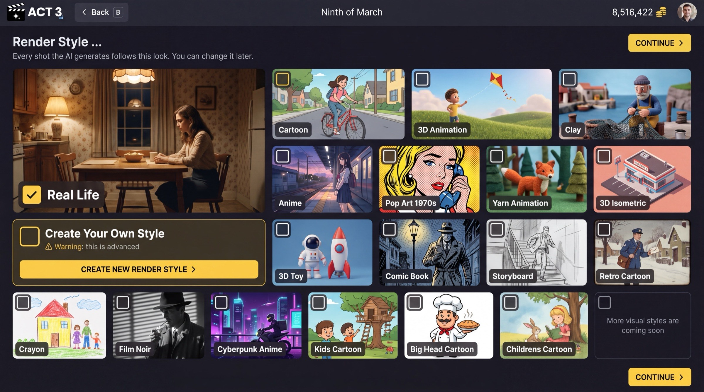

Step 5 of 7
Pick a render style
Choose the look every shot the AI generates will follow. Tick one style card, such as Real Life. Then click CONTINUE to open the Editor.

CONTINUEWhat this page is
Render Style is the look of the whole film. Every shot the AI generates follows it, so your film looks like one film and not a mix of styles. The page says it plainly: you can change it later.
Your decision
- Real Life for live-action footage that looks shot on a camera.
- A preset style (Cartoon, 3D Animation, Clay, Anime, Comic Book, Film Noir and the rest) for animation or a graphic look.
- Create Your Own Style only if none fits. It is marked advanced: CREATE NEW RENDER STYLE › builds a new style, and the wizard then carries on to the Editor with it.
Why you go next to the Editor
On the Empty Script path this is the last wizard page. The import path goes on to the treatment, the characters and the storyboards, but each of those reads the screenplay, and yours is still blank. You reach them from inside the project once you have written some scenes.